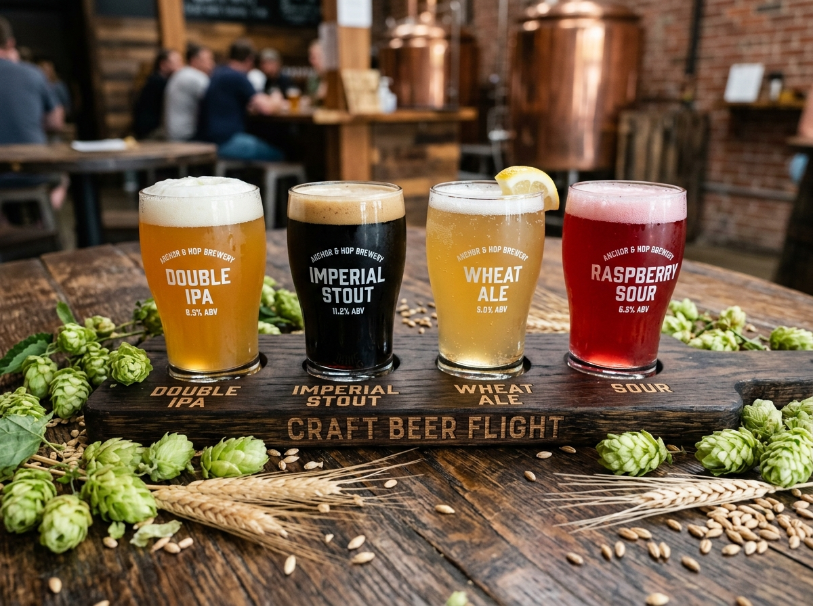
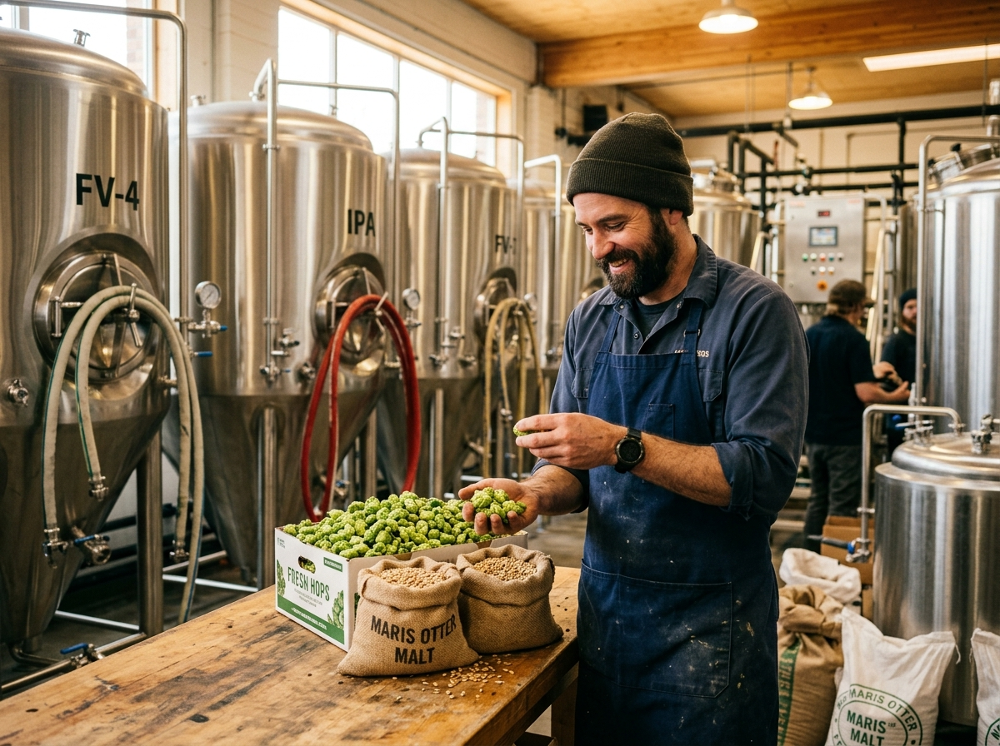
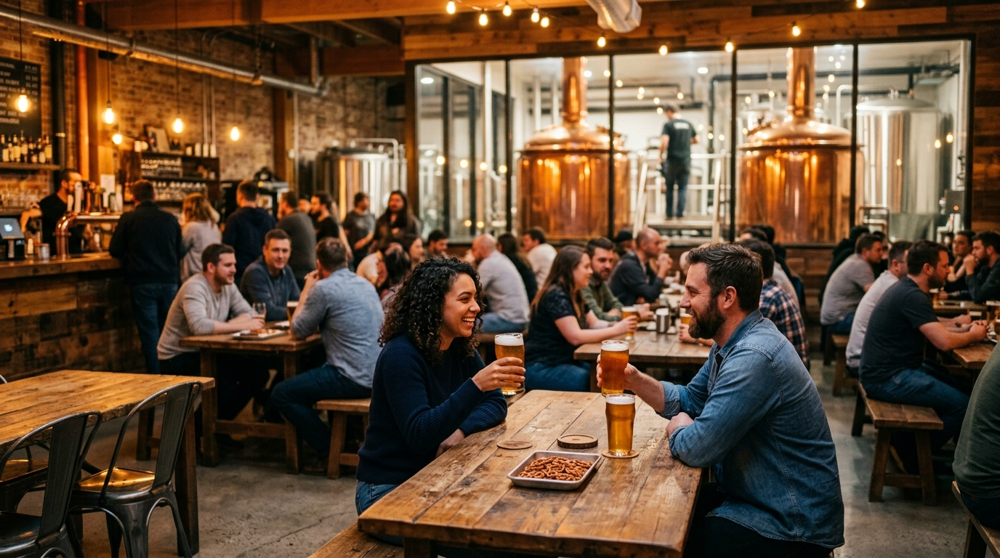

Mastering Unfiltered Fermentation
We craft complex, aroma-forward beers without shortcuts. Explore our rotating tap matrix engineered for true connoisseurs of malt, yeast, and hop alchemy.

Explore Beers By Style
Filter through our 16 seasonal and flagship offerings engineered for diverse taste palettes.
West Coast IPA
Quantum Hops
Resinous pine, dank grapefruit zest, and a sharp crisp bitter finish powered by Centennial & Simcoe hops.

Imperial StoutObscura Reserve
Aged 12 months in Kentucky bourbon barrels. Decadent notes of dark chocolate fudge, toasted coconut, and oak.

Fruited SourElectric Plum
Wild lactobacillus fermentation aged on 300 lbs of organic black plums and Madagascar vanilla pods.

German KellerbierBavarian Gold
Unfiltered pilsner malt lagered for 6 weeks at near-freezing temperatures. Clean, bready, and crisp.
Cosmic Juice
Double dry-hopped with Galaxy and Nelson Sauvin. Explosive tropical notes of passionfruit and white wine grapes.
Baltic Porter
Mocha Eclipse
Cold-brewed Ethiopian Yirgacheffe coffee beans blended into a rich chocolate malt Baltic lager base.
Deconstructing Flavor Profiles
Every pint at Liquid Neon is calibrated across five critical sensory axes.
👃 Aroma & Nose
Volatile hop oils released at warm dry-hopping temperatures deliver intense aromas ranging from pine resin to citrus blossom.
👅 Flavor Complexity
Layered malt profiles provide biscuity caramel backbones balanced against crisp alpha-acid hop bitterness.
🍺 Body & Mouthfeel
From velvety oat-infused silky stouts to effervescent, light-bodied crisp pilsners with tight carbonation beads.
The Liquid Neon Brewing Process
Six meticulous stages executed with scientific precision and artisanal instinct.
Mashing & Grain Milling
Locally sourced malted barley is freshly crushed and steeped in pure filtered water to convert starches into fermentable sugars.
Kettle Boiling & Hop Additions
Sweet wort is boiled in copper kettles. Whole hop cones added at precise intervals for bittering, aroma, and flavor extraction.
Whirlpool & Rapid Chilling
Trub is separated and wort is flash-chilled to pitch-perfect yeast inoculation temperatures within seconds.
Primary Fermentation
House strain ale and lager yeast consume wort sugars over 14–21 days, creating natural carbonation and complex esters.
Dry-Hopping & Barrel Aging
Lupulin-rich hops or oak barrel aging are applied for deep aromatic depth and wood tanin maturity.
Fresh Tap Pouring
Directly transferred into conditioning tanks and poured fresh at 38°F with dense, persistent foam heads.
Fresh From The Tap: Rotator Specials
We rotate 4 tap handles weekly featuring experimental micro-batches brewed by guest craft masters. Once the keg dries up, it's gone forever!
🥭 Mango Haze Cask
Fresh mango puree cask conditioned with Nelson hops.
☕ Espresso Stout Nitrogen
Creamy nitrogen gas pour infused with cold brew.
Share A Pint With Fellow Craft Lovers
Whether you are a seasoned sommelier or new to microbrews, our taproom door is open. Taste the passion in every drop.